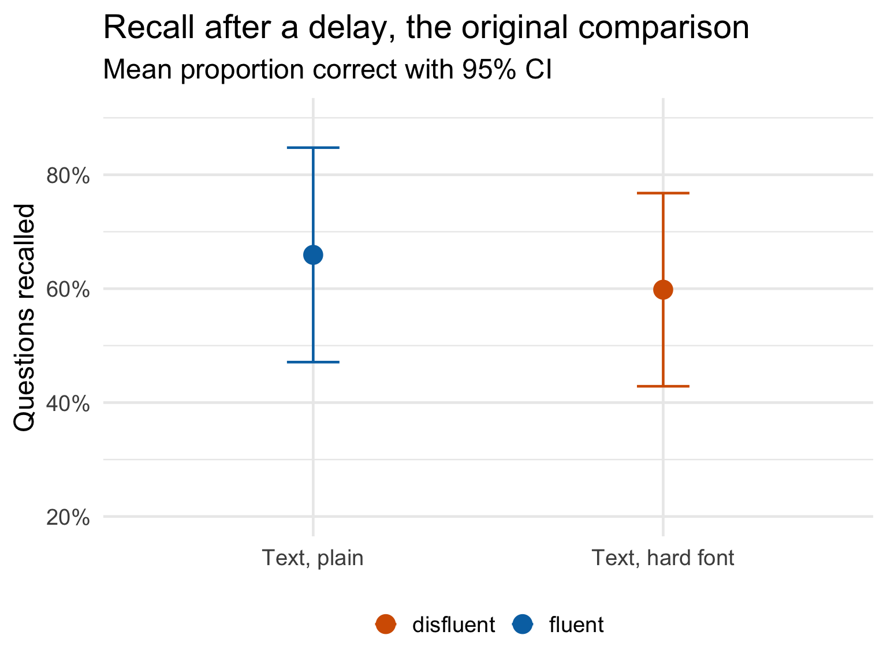
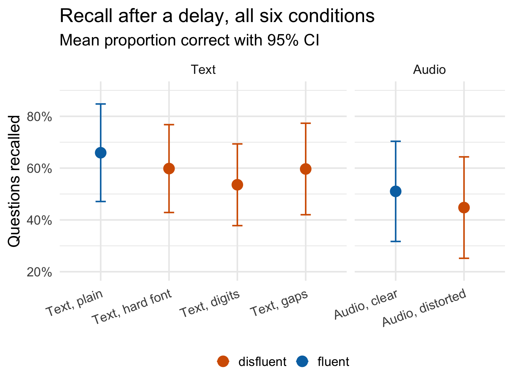
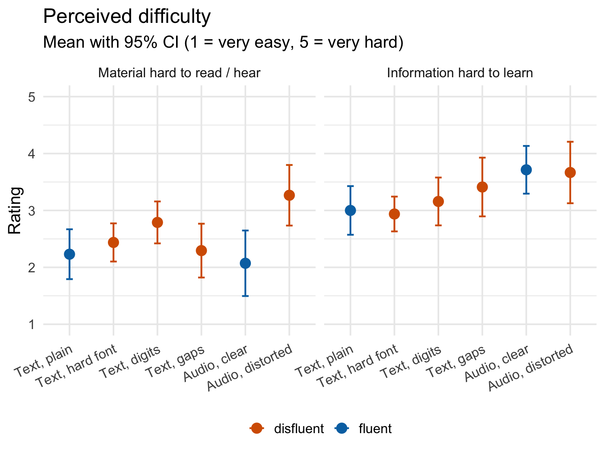

Original work
Diemand-Yauman, C., Oppenheimer, D. M., & Vaughan, E. B. (2011). Fortune favors the bold (and the Italicized): Effects of disfluency on educational outcomes. Cognition, 118(1), 111-115.
Abstract
Previous research has shown that disfluency – the subjective experience of difficulty associated with cognitive operations – leads to deeper processing. Two studies explore the extent to which this deeper processing engendered by disfluency interventions can lead to improved memory performance. Study 1 found that information in hard-to-read fonts was better remembered than easier to read information in a controlled laboratory setting. Study 2 extended this finding to high school classrooms. The results suggest that superficial changes to learning materials could yield significant improvements in educational outcomes.
Team BA spring 2025
- Wadija Ali Ebrahim
- Noah Born
- Nina Burki
- Alain Gehri
- Nando Kolb
- Tina Loretan
- Sebastian Pfäffli
- Nhat Ngan Phan
- Noemi Righetti
- Anja Saner
- Luca Schellinger
- Alexandra Tellenbach
The idea
Make a text slightly harder to read and people will remember more of it. That is the claim and it is wonderfully cheap. Diemand-Yauman and colleagues had participants learn the features of three invented alien species, printed either in clean 16-point Arial or in a small grey hard-to-read font. Fifteen minutes and a distraction task later, the hard-font group recalled 86.5% of the tested features and the clean-font group 72.8% – fourteen percentage points, from nothing more than a typographic nuisance.
The mechanism is supposed to be metacognitive. Struggling slightly to decode the words signals that you have not mastered the material, and that signal recruits the slower, more elaborative processing that makes things stick. A desirable difficulty, in Bjork’s phrase.
If that is really what is going on, then the specific nuisance should not matter much. So we replicated the original font manipulation and added three more ways of making the same material harder to take in.
Everyone learned the same three alien species – the Pangerisch, the Norgletti and the Derlenga, seven features each – and was randomly assigned to one of six presentation formats.
Text, plain – the control
Der Norgletti
- 60 cm gross
- Ernährt sich von Blütenblättern und Pollen
- Hat ein einzelnes gelbes Horn auf dem Kopf
Text, hard font – the original manipulation
Der Norgletti
- 60 cm gross
- Ernährt sich von Blütenblättern und Pollen
- Hat ein einzelnes gelbes Horn auf dem Kopf
Text, digits – letters replaced by look-alike numbers
D3R N0RGL3TT1
- 60 Z3NT1M3T3R 6R0SS
- 3RNÄHRT 51CH V0N BLÜT3NBLÄTT3RN UND P0LL3N
- H4T 31N 31NZ3LN35 63LB3S H0RN 4UF D3M K0PF
Text, gaps – letters deleted
Der Norgletti
- 60 Z_ntim_t_r gr_ss
- Ern_hrt sich von B_ütenbl_tt_rn und P_llen
- Hat ein e_nzel_es g_lbes Ho_n auf dem Ko_f
The two remaining conditions moved the same content from the eyes to participant’s ears: a clear audio recording of the species descriptions, and a distorted audio version of the same recording.
After the learning phase a set of filler tasks was introduced – mood ratings, a questionnaire, a sentence task, a word-sorting task – these tasks ran for about fifteen minutes, as in the original. The memory test followed: seven open questions about the aliens’ features, answered by typing rather than choosing, and scored by hand afterwards. Three parallel question sets existed and each participant was given one of them at random, so no single feature carried the whole result.
We added two questionnaires suggested by the disfluency literature: Dweck’s three-item ‘mindset scale’, and the 17-item ‘Need for Cognition’ scale. If effortful processing is the engine, people who enjoy effortful thinking or who believe ability is malleable are the obvious candidates for a larger effect.
Sample
The questionnaire was distributed through the students’ own networks – fellow students, friends, family. 198 people opened it and 113 reached the end.
We excluded 18 of those: participants who failed both embedded attention checks, who reported uncorrected vision problems (the study is about reading), or who did not report German at C1 or C2 level. That leaves 95 participants in the analysed sample. Requiring only one of the two attention checks to be correct is a lenient rule.
| Gender | n | Mean age | SD age |
|---|---|---|---|
| Female | 57 | 31.5 | 14.3 |
| Male | 36 | 29.5 | 13.1 |
| Non-binary | 2 | 24.0 | NA |
| Condition | n | Mean age |
|---|---|---|
| Text, plain | 13 | 25.4 |
| Text, hard font | 16 | 34.3 |
| Text, digits | 20 | 33.2 |
| Text, gaps | 17 | 24.8 |
| Audio, clear | 14 | 33.9 |
| Audio, distorted | 15 | 31.9 |
The sample is a convenience sample, wider in age than a student pool (mean 30.6 years, SD 13.7) and rather small once it is split six ways: between 13 and 20 people per condition.
Does a hard font help you remember?
The memory score is simply the proportion of the seven questions a participant answered correctly. Answers were coded by hand, so “Pollen und Blüten” counts as a hit even though it is not word for word what the text said; a question left blank counts as not recalled.

Figure 1 puts the two conditions that mirror the original side by side. Participants who read the plain Arial version recalled 65.9% of the features; participants who read the hard-font version recalled 59.8%. The difference is 6.1 percentage points, it points the wrong way, and it is nowhere near significant (t(26.0) = -0.52, p = .607, d = -0.19). The 95% confidence interval runs from -30.3 to 18.0 percentage points – wide enough to contain the original’s +14, which is the honest way to put it: this comparison, on its own, cannot rule the original effect out.
The font effect does not replicate.
The three other ways of making it hard

| Condition | n | Mean | SD | 95% CI |
|---|---|---|---|---|
| Text, plain | 13 | 65.9% | 31.2% | [47.1%, 84.8%] |
| Text, hard font | 16 | 59.8% | 31.8% | [42.9%, 76.8%] |
| Text, digits | 20 | 53.6% | 33.7% | [37.8%, 69.3%] |
| Text, gaps | 17 | 59.7% | 34.3% | [42.0%, 77.3%] |
| Audio, clear | 14 | 51.0% | 33.5% | [31.7%, 70.4%] |
| Audio, distorted | 15 | 44.8% | 35.4% | [25.2%, 64.3%] |
Figure 2 adds the four conditions the original never ran. Nothing separates the six groups (F(5, 89) = 0.73, p = .601, η²p = .040). The digits version (53.6%) and the gap version (59.7%) sit right where the plain text sits. Distorted audio (44.8%) is the weakest condition of all and clear audio (51.0%) is not much better, but the two do not differ reliably either (t(27.0) = -0.49, p = .628, d = -0.18).
Pooling all four disfluent conditions against the two fluent ones gives the comparison the most statistical room: 54.6% versus 58.2%, a difference of 3.6 percentage points in the wrong direction (t(49.0) = -0.48, p = .635, d = -0.11, 95% CI [-18.6, 11.5] percentage points). With 68 disfluent and 27 fluent participants, that test had a 97% chance of catching an effect the size of the original one (d = 0.87). It caught nothing.
The only hint of a difference is between the eye and the ear: text conditions beat audio conditions by a margin that is suggestive rather than reliable (F(1, 54) = 2.97, p = .091, η²p = .052 in a fluency × modality ANOVA on the four conditions that have a fluent and a disfluent version), with no trace of a fluency effect (F(1, 54) = 0.51, p = .480, η²p = .009) and no interaction (F(1, 54) = 0.00, p = .993, η²p = .000).
Did the manipulations land?
A null result is only interesting if the manipulation did something. We asked everyone afterwards how hard the material had been to take in, and how hard it had been to learn, both on a five-point scale.

The conditions did differ in how hard they felt (F(5, 88) = 4.09, p = .002, η²p = .189; left panel of Figure 3), but not in the way the design intended. Distorted audio was clearly harder than clear audio (3.27 versus 2.07, t(26.7) = 3.28, p = .003, d = 1.22), and the digits version was harder than plain text (2.79 versus 2.23, t(27.3) = 2.07, p = .048, d = 0.73). The hard font, on the other hand, barely registered (2.44 versus 2.23, t(24.0) = 0.81, p = .426, d = 0.31), and neither did the gaps (2.29, t(28.0) = 0.21, p = .834, d = 0.08).
That cuts both ways. The original authors stress that their manipulation is subtle – a reader who never sees the fluent version is “unlikely to be even consciously aware of the added difficulty”. A font that does not feel harder is exactly what they describe, so a flat manipulation check is not by itself evidence that nothing happened. But it does mean that in our version of the study, the two conditions that were felt as harder are also the two that produced no memory benefit whatsoever. Difficulty that participants notice is not doing the work here.
The right-hand panel of Figure 3 adds something the recall data only hinted at. Both audio conditions – the clear recording as much as the distorted one – were rated as harder to learn from than any of the four text conditions (3.71 and 3.67 against 3.00 for plain text). Listening once to a spoken list is simply a worse way to memorise it than reading it, and that shows up in both the ratings and the recall.
Asked directly whether the presentation format had affected their ability to take the material in, 67 of 94 said yes – in every condition, including the plain one.
Mindset and need for cognition
Mindset scores are unrelated to how much people recalled (r = -.11, 95% CI [-.31, .09], p = .281), and so is Need for Cognition (r = .02, 95% CI [-.19, .22], p = .885). More to the point, neither moderates the effect of disfluency: the interaction term is not significant for mindset (F(1, 91) = 2.11, p = .150, η²p = .023) or for Need for Cognition (F(1, 91) = 0.05, p = .821, η²p = .001). There is no subgroup in this sample for whom the hard font paid off.
Where that leaves us
| Comparison | Original | Replication | Outcome |
|---|---|---|---|
| Hard font vs. plain text | 86.5% vs. 72.8%, t(26) = 2.3, p < .05, d = 0.87 | 59.8% vs. 65.9%, t(26.0) = -0.52, p = .61, d = -0.19 | not replicated |
| Digits vs. plain text | not tested | 53.6% vs. 65.9% | no effect |
| Gaps vs. plain text | not tested | 59.7% vs. 65.9% | no effect |
| Distorted vs. clear audio | not tested | 44.8% vs. 51.0%, t(27.0) = -0.49, p = .63, d = -0.18 | no effect |
| All disfluent vs. all fluent | not tested | 54.6% vs. 58.2%, t(49.0) = -0.48, p = .63, d = -0.11 | no effect |
Four ways of making the same material harder to absorb, and not one of them improved recall. That is a clean result, and it is worth being clear about how strong a claim it supports.
The single comparison that mirrors the original – hard font against plain text, 16 against 13 participants – is underpowered. With groups that size we had a 61% chance of detecting an effect as large as the one the original reports, so a null there is weak evidence on its own. The pooled comparison is a different matter: 68 disfluent participants against 27 fluent ones, a design with ample power for an effect of that size, and what it found was 3.6 percentage points pointing the other way.
This is also where the broader literature has landed: Rummer, Schweppe and Schwede ran three modified replications of exactly this experiment Fortune is fickle: null-effects of disfluency on learning outcomes (Metacognition and Learning, 2016). A meta-analysis of 25 studies with 3135 participants by Xie, Zhou and Liu found no effect of perceptual disfluency on recall (d = -0.01) or transfer, but a clear effect on how well people thought they had learned and on how long they spent trying – though that meta-analysis has itself been criticised for coding errors.
What we can add is that the failure is not specific to fonts. Digits in place of letters, missing letters, a degraded recording – the disfluency idea predicts a benefit from all of them, and none appeared, not even among the people who like to think hard or believe that ability is trainable. Meanwhile the two manipulations participants did report as harder are also the two disfluent conditions with the lowest recall. Desirable difficulty appears to be a narrow target, and merely making things annoying does not hit it.
Caveats. Our sample is a convenience sample spread thin across six conditions, so each individual cell is small. The learning material was translated into German, which changes word lengths and therefore how the digit and gap manipulations read. The questionnaire ran online and unsupervised, so we do not know how long anyone actually spent on the learning page – a participant who read the hard font for twice as long as intended has, in effect, undone the manipulation. And the memory test was scored by hand from free-text answers.
Data
The anonymised responses behind every figure and table on this page are in BAFS2025_public.csv. Gender, age and education are held back and are not published.